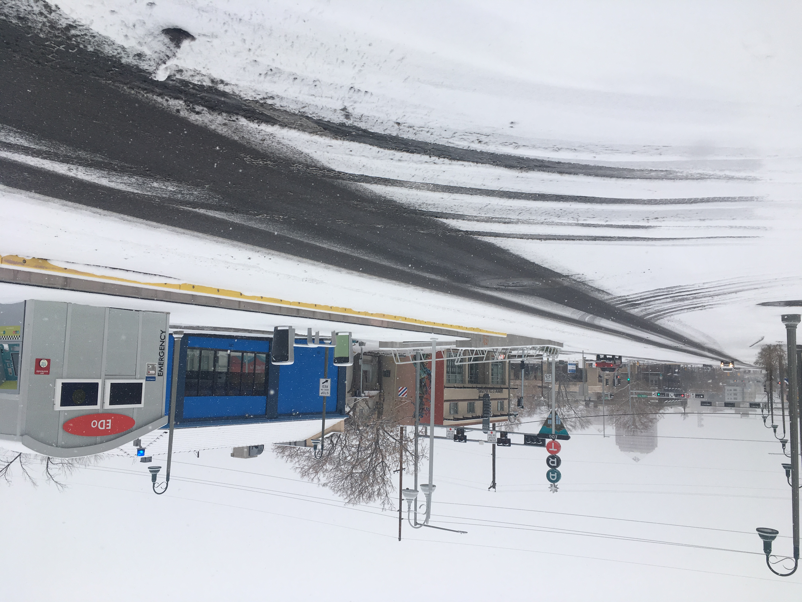
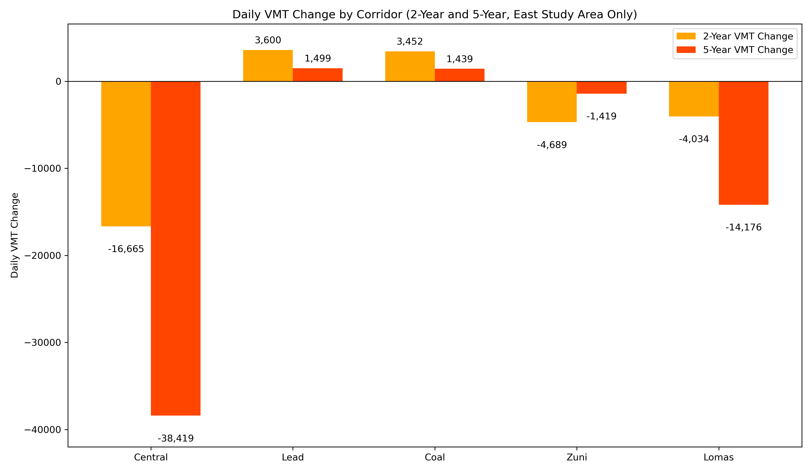

How did Albuquerque Rapid Transit (ART) Impact Traffic on Parallel Corridors?
Albuquerque Rapid Transit station in East Downtown
Objective
This analysis examines the impact of Albuquerque Rapid Transit (ART) on traffic volumes in the Central Avenue corridor east of the Rio Grande and nearby streets. Using VMT (Vehicle Miles Traveled) data from before and after ART implementation, I explored whether traffic diverted to parallel routes, or whether it disappeared entirely.
Methodology
I used AADT data from the Mid-Region Council of Governments (MRCOG) and calculated VMT by multiplying traffic counts by segment length. I compared 2-year (2015–16 vs. 2018–19) and 5-year (2012–16 vs. 2018–22) averages to capture short and long-term change, excluding 2017 due to construction. The analysis focused on Central, Lead, Coal, Lomas, and Zuni corridors in the ART East study area.

Map of the ART East study area, including Central, Lead, Coal, Lomas, and Zuni — the corridors analyzed for VMT change.
Findings
Central Avenue saw the largest drop in VMT, while nearby corridors experienced only modest change.
- Central Avenue traffic dropped sharply: VMT declined by 16,665 (2-year) and 38,419 (5-year).
- Parallel corridors saw only small increases: Lead and Coal picked up minor traffic, but nowhere near Central’s decline.
- Net traffic in the study area decreased: Total daily VMT fell by over 18,000 (2-year) and 51,000 (5-year).
- Traffic did not “flood” surrounding roads as many people hypothesized.
Interactive Map
Use the layer toggle to view changes across the 2- and 5-year comparisons. Thicker red/green lines represent larger decreases/increases in traffic volume.
Source: Mid-Region Council of Governments (MRCOG)
Conclusion
Contrary to predictions, the ART project did not simply push traffic from Central onto nearby corridors. Much of the traffic appears to have disappeared entirely. This outcome is consistent with research on "disappearing traffic" and induced demand from around the world. This underscores the potential for redesigning streets without causing widespread congestion.